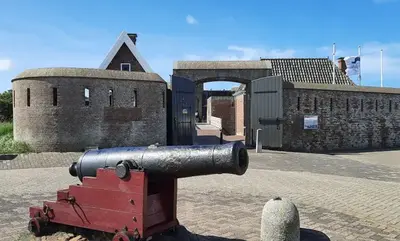
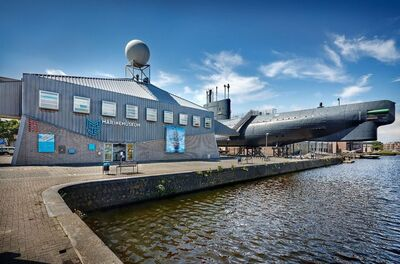

Den Helder is de thuishaven van de Koninklijke Marine. De stad heeft een rijke geschiedenis en dit kun je ervaren in het Marinemuseum.
Napoleon Bonaparte noemde Den Helder het "Gibraltar van het Noorden" en liet er in 1811 forten bouwen vanwege het strategische belang.
De vuurtoren van Den Helder, "de Lange Jaap", is met 63,45 meter de hoogste gietijzeren vuurtoren van Europa.
Den Helder is het startpunt van de Noord-Hollandse Duinroute, een prachtige fietsroute van meer dan 40 kilometer langs de kust en door schilderachtige duinen voert.
Den Helder heeft een uniek stuk natuur genaamd de "Razende Bol" (of Noorderhaaks), een zandplaat tussen Den Helder en Texel.
Fort Kijkduin, gelegen in Den Helder, is een indrukwekkend fort dat werd gebouwd in de vroege 19e eeuw in opdracht van Napoleon Bonaparte. Het fort diende oorspronkelijk ter verdediging van de strategische wateren rond Den Helder en de marinebasis.
Het is sindsdien goed bewaard gebleven en biedt bezoekers een kijkje in de geschiedenis van de Nederlandse kustverdediging.
Tijdens een bezoek aan Fort Kijkduin kun je door ondergrondse gangen dwalen en meer leren over de geschiedenis van het fort, de rol van Napoleon in Nederland en het militaire verleden van de regio.
Naast de historische kant van het fort herbergt Fort Kijkduin ook een Noordzeeaquarium. Dit aquarium laat bezoekers kennismaken met de fascinerende onderwaterwereld van de Noordzee. Het aquarium bevat verschillende tanks met een breed scala aan zeeleven, van kleurrijke vissen tot indrukwekkende zeesterren en haaien. Dit maakt het fort een aantrekkelijke bestemming voor zowel geschiedenis- als natuurliefhebbers, en het biedt een unieke combinatie van educatie en avontuur voor jong en oud.
Het Marinemuseum in Den Helder biedt een uitgebreide en fascinerende blik op de geschiedenis van de Nederlandse Koninklijke Marine.
Bezoekers kunnen historische schepen verkennen, waaronder de beroemde onderzeeboot Hr. Ms. Tonijn. Door de vele interactieve tentoonstellingen krijgen bezoekers inzicht in het leven van marinepersoneel, de technologieën die in de loop der jaren zijn ontwikkeld, en de belangrijke missies die de marine heeft uitgevoerd.
Een van de hoogtepunten van het museum is de mogelijkheid om de binnenkant van een onderzeeër te bekijken, wat een unieke ervaring biedt en een beeld schetst van het claustrofobische en avontuurlijke leven aan boord.
Daarnaast is er aandacht voor scheepsbouw en marinegeschiedenis, met bijzondere objecten zoals oude kanonnen, navigatie-instrumenten en modelschepen.
Het museum is geschikt voor zowel volwassenen als kinderen en wekt de maritieme geschiedenis tot leven met boeiende verhalen en een interactieve benadering.